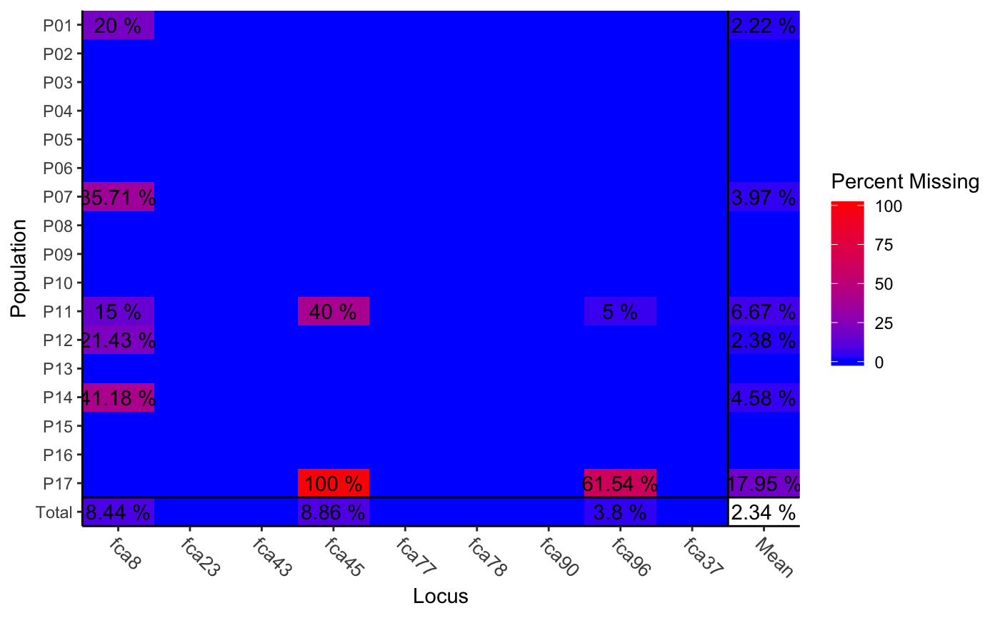
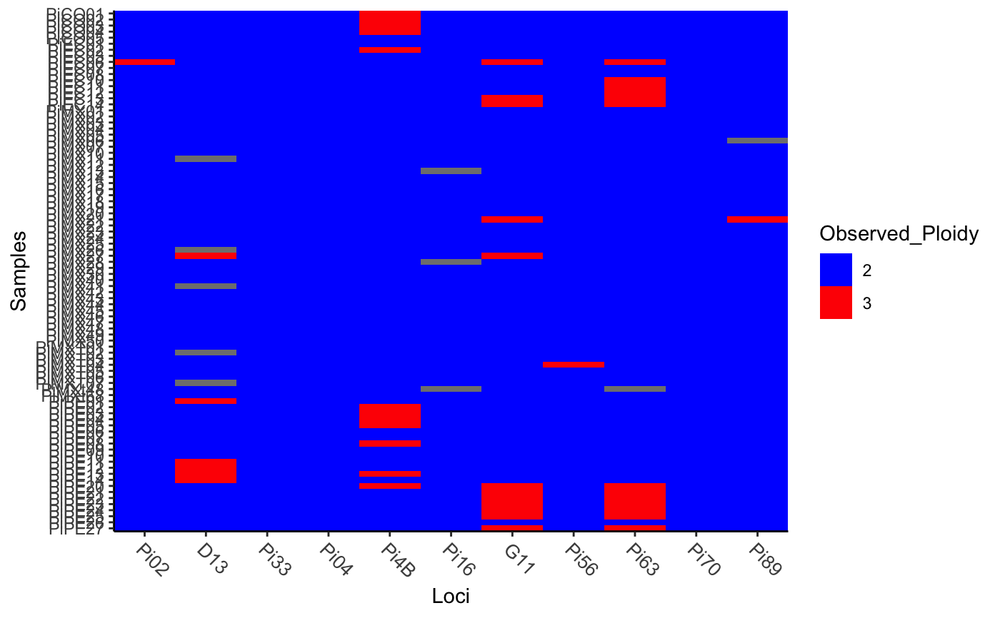

Create a table summarizing missing data or ploidy information of a genind or
genclone object
info_table(gen, type = c("missing", "ploidy"), percent = TRUE,
plot = FALSE, df = FALSE, returnplot = FALSE, low = "blue",
high = "red", plotlab = TRUE, scaled = TRUE)
Arguments
| gen |
a genind or genclone object. |
| type |
character. What information should be returned. Choices
are "missing" (Default) and "ploidy". See Description.
|
| percent |
logical. (ONLY FOR type = 'missing') If
TRUE (default), table and plot will represent missing data as a
percentage of each cell. If FALSE, the table and plot will represent
missing data as raw counts. (See details)
|
| plot |
logical. If TRUE, a simple heatmap will be
produced. If FALSE (default), no heatmap will be produced.
|
| df |
logical. If TRUE, the data will be returned as a long
form data frame. If FALSE (default), a matrix with samples in rows
and loci in columns will be returned.
|
| returnplot |
logical. If TRUE, a list is returned with two
elements: table - the normal output and plot - the ggplot
object. If FALSE, the table is returned.
|
| low |
character. What color should represent no missing data or
lowest observed ploidy? (default: "blue")
|
| high |
character. What color should represent the highest amount
of missing data or observed ploidy? (default: "red")
|
| plotlab |
logical. (ONLY FOR type = 'missing') If
TRUE (default), values of missing data greater than 0% will be
plotted. If FALSE, the plot will appear un-appended.
|
| scaled |
logical. (ONLY FOR type = 'missing') This is for
when percent = TRUE. If TRUE (default), the color specified
in high will represent the highest observed value of missing data.
If FALSE, the color specified in high will represent 100%.
|
Value
a matrix, data frame (df = TRUE), or a list (returnplot
= TRUE) representing missing data per population (type = 'missing')
or ploidy per individual (type = 'ploidy') in a genind
or genclone object.
Details
Missing data is accounted for on a per-population level.
Ploidy is accounted for on a per-individual level.
For type = 'missing'
This data is potentially useful for identifying areas of systematic missing
data. There are a few caveats to be aware of.
Regarding counts of missing data: Each count represents the number
of individuals with missing data at each locus. The last column, "mean" can
be thought of as the average number of individuals with missing data per
locus.
Regarding percentage missing data: This percentage is
relative to the population and locus, not to the entire data set.
The last column, "mean" represents the average percent of the population
with missing data per locus.
For type = 'ploidy'
This option is useful for data that has been imported with mixed ploidies.
It will summarize the relative levels of ploidy per individual per locus.
This is simply based off of observed alleles and does not provide any
further estimates.
Examples
data(nancycats)
nancy.miss <- info_table(nancycats, plot = TRUE, type = "missing")

data(Pinf)
Pinf.ploid <- info_table(Pinf, plot = TRUE, type = "ploidy")
